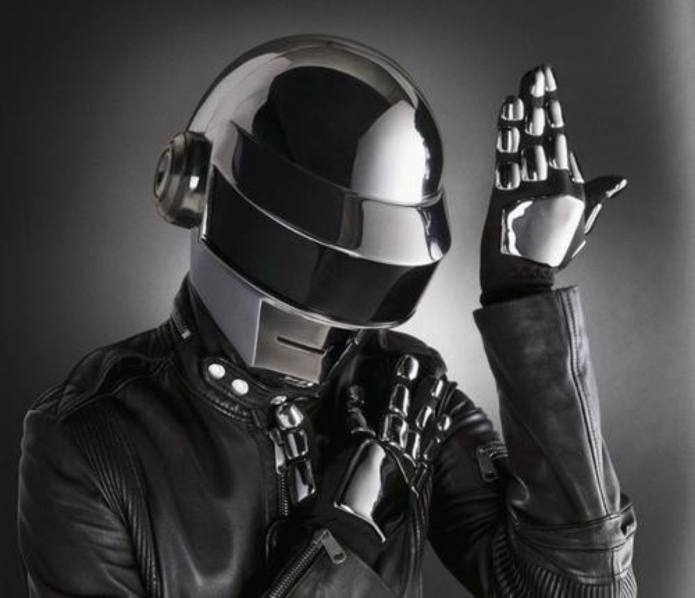

Daft Punk es, sin lugar a dudas, uno de los dúos más influyentes y revolucionarios de la música electrónica y de la música popular en general. Compuesto por los productores franceses Thomas Bangalter y Guy-Manuel de Homem-Christo, el grupo se formó en París en 1993 y rápidamente se hizo conocido por su distintivo sonido que fusionaba house, techno, disco y rock, creando una propuesta innovadora y visionaria que cambiaría la historia de la música. El nombre "Daft Punk" se originó en una crítica negativa que los dos miembros recibieron cuando eran parte de una banda de rock llamada Darlin’, antes de formar su actual proyecto. Sin embargo, lejos de desanimarse, adoptaron el nombre con orgullo y comenzaron a experimentar con la música electrónica. Su primer gran éxito llegó con el lanzamiento de Homework en 1997, un álbum que presentó clásicos como “Around the World” y “Da Funk”. Estos tracks no solo marcaron el comienzo de una nueva era para la música electrónica, sino que también demostraron la capacidad del dúo para conectar con audiencias masivas, sin perder la esencia experimental que los caracterizaba. Con el paso de los años, Daft Punk continuó evolucionando y expandiendo su influencia. Álbumes como Discovery (2001), Human After All (2005) y Random Access Memories (2013) establecieron al dúo como líderes en la música electrónica y más allá. Discovery en particular fue un punto de inflexión, ya que combinó los sonidos electrónicos con elementos del pop, el rock y la música disco, creando éxitos globales como "One More Time", "Digital Love" y "Harder, Better, Faster, Stronger". Estos tracks no solo definieron el sonido de la década de 2000, sino que se convirtieron en himnos atemporales de la música de baile. Además de su innovación sonora, Daft Punk también es conocido por su estilo visual único. Desde sus icónicos cascos de robot hasta sus enigmáticos trajes futuristas, el dúo adoptó una imagen misteriosa que los hizo inconfundibles. Esta estética visual complementó perfectamente su enfoque musical y contribuyó a su identidad como una banda que trasciende las fronteras del arte sonoro, convirtiéndose en una figura cultural global. A lo largo de su carrera, Daft Punk ha cosechado una impresionante cantidad de premios y reconocimientos, incluyendo varios premios Grammy, que subrayan su impacto monumental en la música contemporánea. Uno de sus logros más destacados fue el lanzamiento de Random Access Memories, un álbum que fusionó sonidos de la electrónica con influencias del funk, el soul y la música disco. El sencillo "Get Lucky", con la colaboración de Pharrell Williams, se convirtió en un éxito global, alcanzando las primeras posiciones en las listas de todo el mundo. Aunque Daft Punk anunció su separación en 2021, su legado sigue vivo. La música, los innovadores videoclips y la fascinante estética visual del dúo continúan inspirando a nuevas generaciones de artistas y fans en todo el mundo. Daft Punk no solo definió una era de la música electrónica, sino que también dejó una huella imborrable en la cultura popular, uniendo géneros y estilos de una manera que pocos artistas han logrado. Daft Punk es más que una banda. Es un fenómeno cultural, una fuente inagotable de inspiración y un referente eterno de cómo la música puede transformar el mundo.
